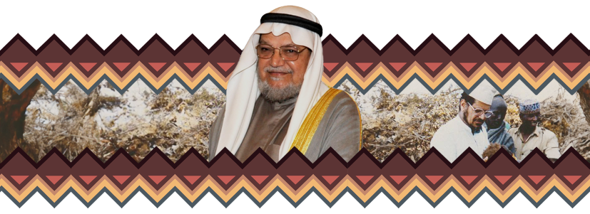

«أقول أنا مثلي مثل أي مسلم من المسلمين، أنا أبحث عن السعادة، قد يعتقد
بعض الناس أن السعادة في الأموال، وبعض الناس يعتقد أنها بالشهادات،
بالجاه، بالمكانة الاجتماعية، أنا أعتقد أن السعادة ممكن أن تحصلها بطاعة
الله أولاً، ثم بأن تحاول أن تغير العالم، ليكون العالم مكاناً أفضل
لغيرك من البشر»
حياته -رحمه الله - البهيَّة
النشأة.. والبدايات..
ولد حاملًا همّ الدعوة في الكويت عام 1947 مـ. في أسرة متوسطة الحال
سُمّي "مطوع" منذ نعومة أظفاره لحرصه على صلاة الفجر في المسجد وعمره
5 أعوام
كبر محبًا للعمل الخيري وملتزمًا بأحكام الإسلام
بدأ الشيخ مبكرًا في العمل الدعوي، وامتاز بالجدية حيث سافر لمعظم
الدول العربية وبعض الدول الغربية وهو في السادسة الابتدائية
أخذ جولة في بعض الدول وساعده والده بمئة دينار من 3 دول عربية إلى 3
غربية ومنهم إلى تركيا بطريقة برية عجيبة في بدايته!
تربية والديه من أهم أسباب نبوغه بعد توفيق اللّه تعالى
من أبرز صفاته "البساطة" فقد كان بعيدًا كل البعد عن التكلف
رحلاته الدراسية والعلمية..
بدأ دراسته في الكويت، ثم انتقل إلى بغداد لدراسة الطب لتبدأ رحلة
جديدة من حياته
تخللت تلك الرحلة بعض المنغصات والهموم لما رآه في جامعة الطب من
اختلاط وتبرج فأصيب بنوع من الإحباط واليأس، فقرر قطع تذكرة طريق
واحد من بغداد لمكة ليقيم هناك
ذهب للحج، ولم يركب سيارة واحدة منذ وصوله لمكة، وتنقل بين المشاعر
كلها مشيا على الأقدام؛ وكانت تلك أجمل حجة له في حياته
تخرج من جامعة بغداد وحصل على الباكلوريوس في الطب والجراحة ثم حصل
على دبلوم أمراض مناطق حارة في جامعة ليفربول
ثم بدأ مشوارًا جديدا، حيث أراد أن يكمل دراسته في كندا، ولكنه لن
يسافر حتى يبحث عن زوجة
حياته الأسرية
كان حريصًا على ألا يتزوج إلا محجبة، لجئ للعراق وسوريا محاولًا
الزواج لكن الله لم يكتب له ذلك، فرجع للكويت وسهّل الله له الزواج
قال رحمه الله: أحمد الله وأشكره أن زوجتي ساعدتني في عملي، فكانت
زاهدة لا تريد مالاً، ولذلك في رحلتهم في أفريقيا كانت تصبر هي
وأولادي على خشونة العيش هناك
وعلى ما كانت أفريقيا عليه كان أولاده يحبون أفريقيا
قال الشيخ نبيل العوضي: ما ترك السميط شيئًا لنفسه، أعطي جائزة الملك
فيصل ملوين ريال، فما أخذ شيئًا وتصدق بها كلها؛ وقال لي مرة بيني
وبينه "البخيل من أبنائي من ينفق نصف ماله لله" لقد عود أهل بيته على
الإنفاق
جلست زوجته معه في كندا في دراسته سنوات، وهي بنت عائلة ثرية، لكنها
تصدقت بمالها وظلت سنوات لا تملك إلا القليل من الملابس؛ قال السميط
رحمه الله "يا إخواني يجب أن نغير من نظرتنا إلى هذه الدنيا، يجب أن
نبحث عن منابع السعادة الحقيقية التي لا تشترى بالمال"
ورثت زوجته مبلغًا كبيرًا جدًا من أبيها فرفضت أن تدخل هللة واحدة
إلى بيتها، وتبرعت به كاملا
قضوا 3 سنوات في قرية نائية في مدغشقر أصلها من أناس أتوا من الحجاز،
كل الذي يعرفونه أن مكة في الشمال، فقرر الشيخ السميط المهاجرة هناك
هو وأهله وجلسوا مع الطلبة والأيتام، يعلمونهم
بعد العشاء تنقطع الكهرباء دائمًا، فكان الطلبة والأيتام ينامون،
فيجلس الشيخ هو وزوجته وراء بيتهم يتفكرون في بديع خلق الله
في يوم بعد انقطاع الكهرباء التفتت زوجته وقد ظن أنها ستقول "متى
سنذهب للكويت؟" فإذا بها تقول "لو الله غفر لنا ودخلنا الجنة فهل
سنحس بطعم السعادة مثل ما نحس بها الآن؟"، لماذا؟ لأنهم كل يوم
يذهبون لبعض القرى ويكلمونهم عن الإسلام، ومن أسعد اللحظات لما يأتيه
أحدهم ويرفع السبابة ويتشهد
بداية عمله الخيري..
كانت بدايته الحقيقية رحمه الله مع امرأة، حيث كانت صدقتها نواة عمل
الشيخ الدعوي
لما كان في كندا وبريطانيا اتفق هو وزوجته على أن يهاجرا إلى
إندونيسيا أو ماليزيا ويقيما هناك بشكل دائم ويتفرغا للدعوة، فلما
عاد إلى بلده بدأت تعود إليه أحلامه لما كان صغيرًا ويقرأ عن أفريقيا
ويبكي من أثر قصصها
جاءت امرأة فتبرعت له لبناء مسجد، فقرر هو وزوجته لدولة "ملاوي" وكان
هدفه الرئيسي بناء مسجد، لكن لما رأى أن الوصع مؤلم لأقصى حد عندما
قابل أئمة مساجد لا يعرفون الفاتحة وقرية كاملة من المسلمين ما رأوا
مصحفًا في حياتهم -ولا تزال هذا الأمثلة موجودة ونحن نلهوا في
دنيانا- انطلق في الدعوة
همته في العمل الخيري..
كان الهم الأكبر لديه أن يعيش للعمل التطوعي
قيل عنه: "الفضول لا يعرف إلى نفسه ولا إللى وقته سبيلًا"
نذر نفسه وبذل الغالي والنفيس في سبيل الهدف السامي الذي آمن به
عاش هم القارة الأفريقيا في حياته حتى طلق الدنيا من أجلها
وإذا ذكرت أفريقيا في العمل الخيري لا بد أن يذكر الشيخ السميط
قيل عنه: "وهو رجل إذا تناول فضية فإنه يعطيها حقها وينجزها...، وكان
لديه مشروع بسيط في كندا فرأى أن الكتب الإسلامية المترجمة للغة
الإنجليزية فليلة، فبدأ المشروع ومشى فيه وأعطاه حقه
أوذي في الله بسبب حمله هم الدعوة، فقد سجن في عهد صدام حسين وأخذ
لحم من خدّه ويده وضرب بالسوط
منهجه في العمل الخيري..
منهجه منهج يعتمد على التعليم على المدى البعيد لا لمدة قصيرة سنة أو
سنتين
الذي يعتقده الشيخ أنه سواء كنت فقيرا أو غنيا يجب أن يوفر لك تعليم
اهتمامه بالجانب الإعلامي..
الإعلام يستطيع أن يدخل كل بيت شاء رب البيت أم أبى
قال السميط: "هناك قرية كاملة قاديانية، وتظن أن الإسلام هو
القاديانية، ونحن لم نصل لهذه القرية...، لكن بسبب الإذاعة فقد غيروا
عقيدتهم إلى الإسلام الحقيقي"
قرية في نيجيريا سمع سلطانها -وهو سلطان على 20 أو 30 قرية- عن
الإذاعة فقال: "أنا سعيد جدا، وأتمنى أن أبناء قريتي يشاركون في
سماعها"
مزجه بين العمل الخيري والدعوي..
في جنوب السنغال قبائل أغلبها وثنية ومسيحية وقلة من المسلمين
جاء الحاكم للشيخ وطلب منه حفر ستة آبار لست قرى كل أهلها وثنييون
ومسيحيون
حفروا الآبار وفوجئوا بأن قريتين خلال أسبوع أسلموا عن بكرة أبيهم،
وقرية أخرى أسلم جزء كبير منهم، والقرى الثلاث الأخرى أسلم أهلها
فيما بعد
لكن لماذا أفريقيا؟
لأنها قارة مقبلة على الإسلام، فالذين يدخلون الإسلام الآن بالآلاف
بل الملايين، ولو وجدوا من يدعوهم لما بقي فيها أحد على غير الإسلام
إلا أن يشاء الله
لأن التنصير قد عاث فيها فسادًا
لأن ثالوث التأخر -الجهل والفقر والمرض- ينخر في هذه القارة، وهو
ثالوث قوي يضرب جسد أي أمة فيجعلها أمة متأخرة
قصته مع السلطان الأفريقي
"باتريس تكورال" وهو سلطان من أقوى السلاطين في جنوب تشاد، وكان يكره
العرب والمسلمين، بل إن أكثر من مسلم وعربي مروا من منطقته وقتلوا
ذهبوا في رمضان إلى السلطان في قريته، وبدأوا بتوزيع الأكل، وقال
السلطان لماذا يوزعون الأكل؟، قيل: لإخوانهم المسلمين، قال: الذين
أرسلوا الأكل للفقراء هل رأوهم، قيل: لا؛ فتأثر كثيرًا من هذا الموقف
على إثر هذا التأثر، أمر أن تهدم كل البيوت التي في وسط المدينة،
وأعطاهم لهم هذا مكان مسجد لكم
وبدأ ينشر الإسلام، وأصر أن لا يسلم إلا على يد من بنى المسجد -وكان
الذي بنى المسجد امرأة كويتية عمرها 80 عامًا-، وقلنا لن نستطيع أن
نلبي لك هذا الطلب
لكنه أصر على رأيه وجاء الكويت، وأسلم
ليلة إسلامه رفض أن ينام حتى يحفظ الفاتحة، فجلس يحفظه أحدهم حتى
صلاة الفجر، ثم قال: أنا مُصِر ألا أنام حتى أحفظ "قل هو الله أحد"،
فحفظها وسمى نفسه عبدالعزيز
أسلم على يديه ستون ألف رجل من بينهم 8 سلاطين لقبائل
كلما أسلم سلطان آخر أرسلوا له داعية خصيصًا له
وكان كل من أسلم يرسلونه للحج، فيرجع متأثرًا جدا ويبدءون في نشر
الإسلام
تخطيطه للعمل الدعوي
تميز الشيخ بأنه كان يرسم خارطة العمل بدقة، وكان يعتني دائمًا
بالتفاصيل الدقيقة الخاصة لكل مجتمع
فيعرف مثلا أن هذا المجتمع عنده قابلية للدخول في المواضيع
الروحانية، وهذا المجتمع لا يمكن أن يدخل الإسلام إليهم إلا بالأمور
الإغاثية، وهكذا، ثم يرسم رؤية معينة
كان عنده شيء من التنبؤ والتوقع لحصول شيء على إثره يكون هناك تضييق
على العمل الإسلامي أو الخيري، فيستعد لهذه اللحظة
فكان مثلا حريصًا على أن يكون عمله قانونيًا في كل شيء
تجرده للعمل الخيري بعيدًا عن النزعات السياسية والحزبية
كان حرصه على أن ينشر أخلاق الإسلام هو المحرك لعمله
من صفات الشيخ أنه كان حريصًا على إبعاد السياسة والحزبية عن عمله
مثلًا إذا حصلت انتخابات في أي دولة أفريقية أيًا كان نوعها، وطُلب
من قبل السياسيين فكان يرفضه رفضًا قاطعًا
اشترط على كل موظف إذا انخرط في جمعيته -جمعية العون المباشر- ألا
يكون جزءًا من المنظومة السياسية في داخل البلد
أعظم أمانيه
كانت أمنياته لا تعلق لها بالدنيا، كانت أعظم أمانيه أن يجوب البلاد
للدعوة، وأن يصرف وقته في هداية الناس
وما ذُكِر آنفًا إنما هو طرف من حياته من هذا الكتاب الثري "في صحبة
السميط":
وهذا الكتاب جدير والله أن يقرر في الحلقات القرآنية وفي المدارس، وحري به
أن يكون بين أيدي الآباء والأمهات يقرأوا سيرته رحمه الله على مسامع
أبنائهم وبين أيدي الدعاة -الذين اقتفوا سبيل الأنبياء- ليكون سلوى لهم في
طريقهم؛ هذا الكتاب فيه من قصة هذا الرجل مما يكشف الغطاء ويضع النقاط على
الحروف ويجعل أحدنا واقفًا بتجرد أمام المرآة من أنا وكيف أنا وماذا فعلت
لأخدم ديني؟ كتاب جميل والله.